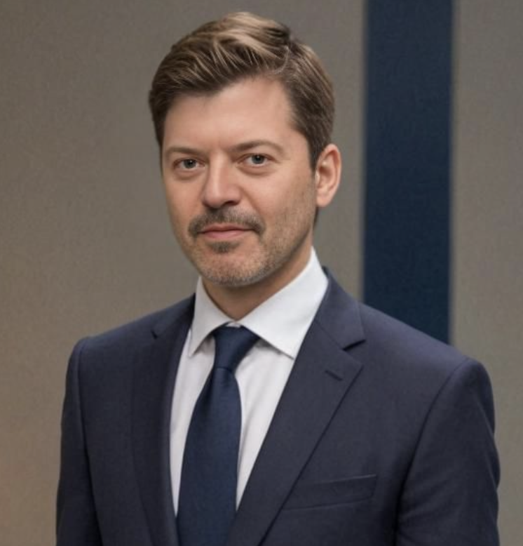

Owns an enterprise agentic AI platform in production at three multinationals·€15.3M AI programme directed end to end·Full Professor of AI, CUNEF Universidad
I run enterprise AI as a governed, budgeted capability. At Accenture I own RSA, an agentic AI platform on SAP Business Technology Platform in production at three large multinational clients, and I am accountable for its reference architecture, guardrails, output-quality evaluation and the cost-per-task model used across delivery teams. My technical depth is first-hand, and it is what makes those architecture, risk and cost decisions defensible to clients, boards and regulators. Before this I directed AI4HealthyAging, a €15.3M NextGenerationEU programme run through a 60-person organisation across a multi-site European consortium.

I own RSA (Rapid SAP Adoption), an enterprise agentic AI platform built on SAP Business Technology Platform and running in production at three large multinational clients. It turns a client's process and system landscape into structured knowledge, and has agents produce analysis, configuration decisions and test cases with full traceability.
Reference architecture, ingestion and integration layers, guardrails, output-quality evaluation and the cost-per-task model applied across delivery teams.
The platform's reference architecture and the ingestion and integration layers that connect it to each client's landscape.
Guardrails on agent behaviour, and full traceability for every analysis, configuration decision and test case the agents produce.
Evaluation of the quality of what the agents produce, owned as part of the platform.
The cost model applied across delivery teams, so AI cost is measured per unit of work.
Directed AI4HealthyAging, funded by NextGenerationEU, across a multi-site European consortium and a 60-person programme organisation.
Led the permanent innovation organisation inside Capgemini's Hybrid Intelligence practice for three years, reaching 20 specialists with defined roles, capability development and progression.
Converted technical propositions into more than €15M of new contracted business.
Improvement in delivery efficiency across a global practice.
My work sits where AI decisions carry regulatory, clinical or financial consequences, and where governance has to be designed in rather than added after deployment.
Based in Madrid, Spain.
Owns RSA, an enterprise agentic AI platform on SAP Business Technology Platform in production at three large multinational clients. Accountable for reference architecture, ingestion and integration, guardrails, output-quality evaluation and the cost-per-task model across delivery teams.
2026 –Set AI strategy and product. Built a dataset distillation technology now under technical evaluation by a global hardware manufacturer. Senior GenAI advisor to a global insurer (MAPFRE Global Corporate).
2024 – 2026Member of the Technical Authorities Board. Led the practice's permanent innovation organisation for three years, to 20 specialists. Directed AI4HealthyAging (€15.3M, NextGenerationEU) with a 60-person programme organisation.
2019 – 2025Led AI and ML for risk scoring and portfolio models in a regulated bank: explainable, audit-ready and bias-mitigated, with secure multiparty computation and data-poisoning detection.
15% lower model development cost · 8% better portfolio performance 2018 – 2019Directed the technical committee of a multi-stakeholder intelligent resource-management programme, owning roadmap and technical governance across real-time prediction, optimisation and multi-source data.
2014 – 2017Led the technical side of enterprise RFPs for SEAT-CUPRA (awarded) and MASORANGE, shaping the value case and solution design that secured the business.
SEAT-CUPRA · awardedA selection from more than €20M in competitive research funding awarded as principal investigator, alongside industry programmes led as technical director.
Directed as principal investigator: a federated, explainable AI platform for early diagnosis of age-related diseases across distributed hospital networks, without centralising patient data. Multi-site European consortium and a 60-person programme organisation, from inception to production in a regulated setting.
I lead the technical and research work on digital-twin AI for early cardiovascular risk from scarce clinical data, showing that explainability and predictive performance can coexist in data-constrained clinical settings.
I led the feasibility study, algorithm design and experimental work for a machine-learning virtual photogrammetry system to automate wing-fit on the Airbus A400M military transport, applying 3D computer vision to a high-precision aerospace manufacturing problem.
I led the design and deployment of explainable risk-scoring and portfolio-optimisation systems for audit-ready financial decisions, meeting regulatory transparency requirements within a single architecture and using secure multiparty computation. Model development cost fell by 15% and portfolio performance improved by 8%.
Full Professor of Computer Science and Artificial Intelligence at CUNEF Universidad, Madrid, since 2022, and previously Professor of AI at Universidad Pablo de Olavide (2012 to 2022). Ranked among the top 2% of scientists worldwide by Stanford/Elsevier, with an h-index of 39 and more than 7,200 citations.
Architecture and cost decisions at enterprise scale are only as good as the judgement behind them. I keep that judgement tested against working systems through independent open-source releases in agent orchestration, model compression and optimisation.
Based in Madrid. Open to roles in Spain or remote from Madrid.
Head, VP or C-level enterprise AI and data leadership, in Spain or remote from Madrid, in regulated and industrial sectors.
The mandate I am suited to: owning enterprise AI and data as a governed, budgeted capability, from platform and architecture decisions to delivery economics and regulatory accountability. Executive search firms and hiring executives can reach me directly.